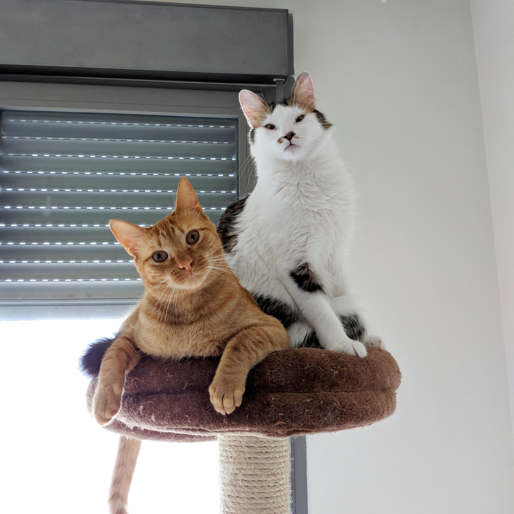

Sandra Cerro
Change to English!Estudiante de Desarrollo Web
Hola, soy Sandra, una estudiante de Desarrollo Web en Madrid, y esto no es una web seria.
Haz click por aquí debajo para ir abriendo los diferentes apartados.
Haz click por aquí debajo para ir abriendo los diferentes apartados.
[+] Control de cambios
He hecho algunas cosillas estos últimos años, aquí están algunas de las más destacadas
[+] Actualizaciones
Algunas de las cosas más 'relevantes' que me han sucedido en las últimas semanas
[+] Biografía
¿Quiénes somos? ¿A dónde vamos? ¿De dónde venimos?
Gracias por leer hasta aquí. A cambio te dejo una foto de mis gatos, que han colaborado duramente conmigo para realizar este sitio, tumbándose en el teclado e impidiendo que pudiese ver la pantalla. Sin ellos nada sería posible.
